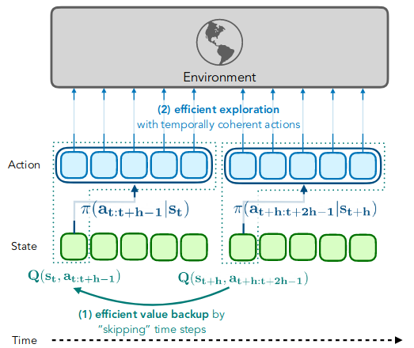
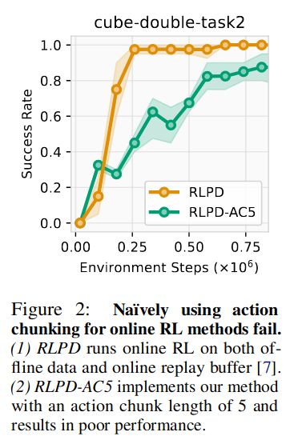
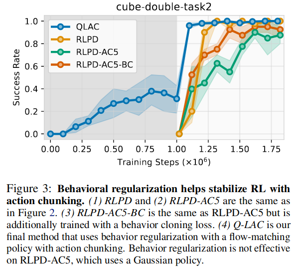
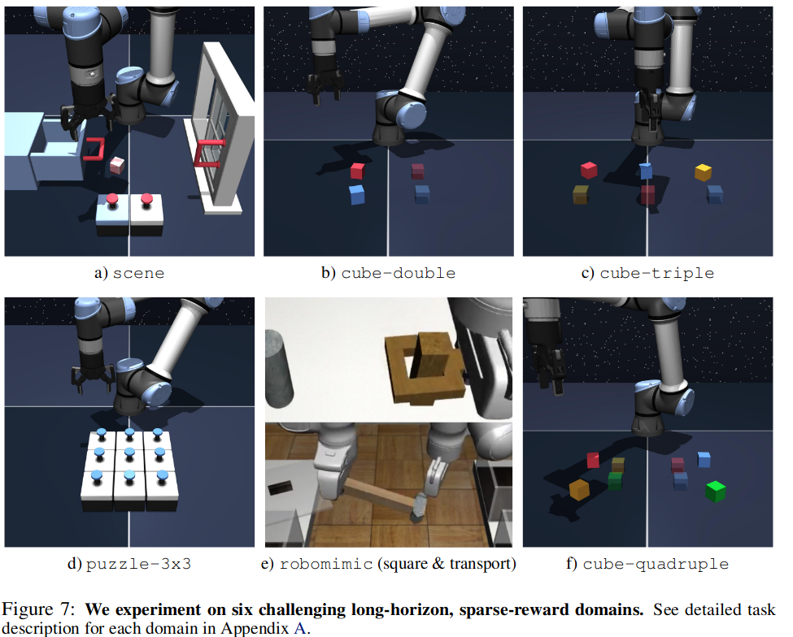
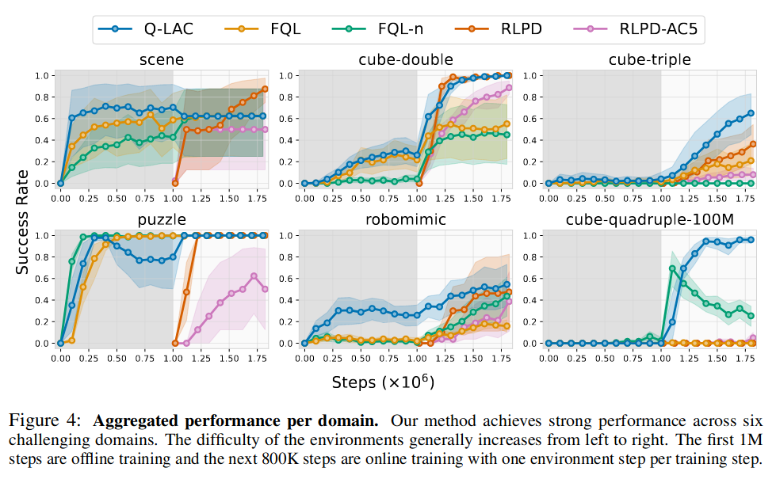
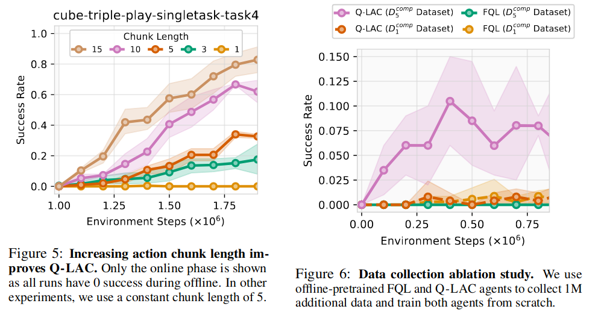

Q-Learning with Action Chunking (Q-LAC)
Contents
Q-Learning with Action Chunking (Q-LAC)#
제목: Sample-Efficient Reinforcement Learning with Action Chunking
저자: Qiyang Li, Zhiyuan Zhou, Sergey Levine, UC Berkeley.
학회: Exploration in AI Today Workshop at ICML 2025
Overview#
Target task: Offline2Online, sample efficient RL, Exploration
Algorithm class: FQL (Flow Q-learning; [PLL25]) with an extended action space
Motivation
slow 1-step TD backups
temporally incoherent actions for exploration
[Comment] Offline2online에서 발생하는 문제점을 해결하는 논문은 아니다. 1번은 sample efficient RL과 연관되고, 2번은 exploration과 연관되기 때문에 일반적인 online RL 분야에서 발생하는 문제를 다루는 논문
Solution: Action chunking
현재 시점의 행동만 출력하는 기존 정책 대신 현재부터 \(h\) steps 동안 사용할 action sequence를 출력하는 정책 사용:
\[ \pi_\psi(\mathbf{a}_{t:t+h-1} \mid s_t) \quad\text{where}\quad \mathbf{a}_{t:t+h-1}= [\overbrace{a_t \;\; a_{t+1} \;\; \ldots \;\; a_{t+h-1}}^{h \;\text{times}}]^\top \]Open-loop control: \(s_t\)만 보고 \(a_t\)부터 \(a_{t+h-1}\)을 순서대로 환경과 상호작용

Introduction#
가장 큰 motivation
최근 imitation learning (IL) 분야에서 action chunking을 사용한 연구 등장 (ALOHA 논문; [ZKLF23])
❓ Action chunking이 IL 분야에서는 사용되지만 RL에서는 사용되지 않은 이유
IL 데이터셋 (특히 인간이 직접 수집한 데이터셋)은 non-Markovian behavior을 포함하고 있을 수 있음
하지만 MDP로 문제를 formulate하는 RL의 경우 optimal policy가 Markovian poilcy이기 때문에 action chunking policy는 suboptimal하다.
💡 하지만 online RL에서 action chunking이 효과적일 수도 있는 이유
Optimal policy을 찾기 위해 꼭 필요한 과정인 exploration의 경우 non-Markovian 성격을 띠며 temporally extended actions가 더 효과적일 수 있다고 주장
1-step TD의 경우 value backup가 느려 sample inefficient하다.
Q-Learning with Action Chunking (Q-LAC)#
현재 시점의 행동만 출력하는 기존 정책 대신 현재부터 \(h\) steps 동안 사용할 action sequence를 출력하는 정책 사용:
\[ \pi_\psi(\mathbf{a}_{t:t+h-1} \mid s_t) \quad\text{where}\quad \mathbf{a}_{t:t+h-1}= [\overbrace{a_t \;\; a_{t+1} \;\; \ldots \;\; a_{t+h-1}}^{h \;\text{times}}]^\top \]Open-loop control: \(s_t\)만 보고 \(a_t\)부터 \(a_{t+h-1}\)을 순서대로 환경과 상호작용
이 decision process를 기존 Markov decision process (MDP)로부터 다시 formulation 가능
기존 MDP \(\mathcal{M}=(\mathcal{S}, \mathcal{A}, r, p, \gamma)\) ⇒ 새로운 MDP \(\bar{\mathcal{M}}=(\mathcal{S}, \bar{\mathcal{A}}, \bar{r}, \bar{p}, \gamma^h)\)
원래 행동공간 \(\mathcal{A}\subseteq\mathbb{R}^{d_a}\) 대신 extended action space
\[ \bar{\mathcal{A}}\subseteq\mathbb{R}^{\overbrace{d_a \times d_a \times \ldots \times d_a}^{h \, \text{times}}} \]보상함수 (\(h\) steps 동안 받은 보상의 discounted sum)
\[ \bar{r}(s_t, \mathbf{a}_{t:t+h-1})=\sum_{k=0}^{h-1}\gamma^{k} r(s_{t+k},a_{t+k}) \]전이확률분포 (\(s_t\)의 다음 상태가 \(s_{t+h}\)이 됨)
\[ \bar{p}(s_{t+h}|s_t, \mathbf{a}_{t:t+h-1})=\prod_{k=0}^{h-1}p(s_{t+k+1}|s_{t+k},a_{t+k}) \]매 \(h\) steps마다 transition \((s, a, r, s')\) 을 저장하는 방식으로 쉽게 구현됨
위 transition을 사용하면 다음과 같은 critic loss와 actor loss 를 얻음
Offline2online을 할 때 일반적인 online RL알고리즘을 선택하고 위처럼 학습하면 성능이 오히려 떨어진다. (문제의 원인 설명 부족)
RLPD (Reinforcement Learning with Prior Data): replay buffer에 offline dataset 넣고 online RL하는 offline2online 기법.

\(\pi_\psi(\mathbf{a}_{t:t+h-1} \mid s_t)\)이 충분히 복잡한 분포면 좋겠음 ⇒ FQL 손실함수 사용
FQL 손실함수: offline dataset으로부터 behavior cloning한 pretrained flow matching network와 \(\pi_\psi(\mathbf{a}_{t:t+h-1} \mid s_t)\)의 behavior constrained term 추가된 형태

Experiment#
Benchmark environment:
OGBench에서 5개 domain \(\times\) 각 domain에서 2개 tasks
Robomimic에서 2개 tasks

Learning curves

Ablations studies

왼쪽: Chunk size에 따른 ablation
오른쪽: Action chunking이 exploration을 잘했다는 증거
cube-triple도메인에서 FQL 알고리즘과 Q-LAC 알고리즘을 사용하여 각각 1M steps 동안 offline pretraining한 후 데이터 1M 개 수집. \(\mathcal{D}_1, \mathcal{D}_5\)\(\mathcal{D}_1^{\text{comp}}=\) Offline dataset + \(\mathcal{D}_1\), \(\mathcal{D}_5^{\text{comp}}=\) Offline dataset + \(\mathcal{D}_5\) 으로 다시 offline ptraining한 결과